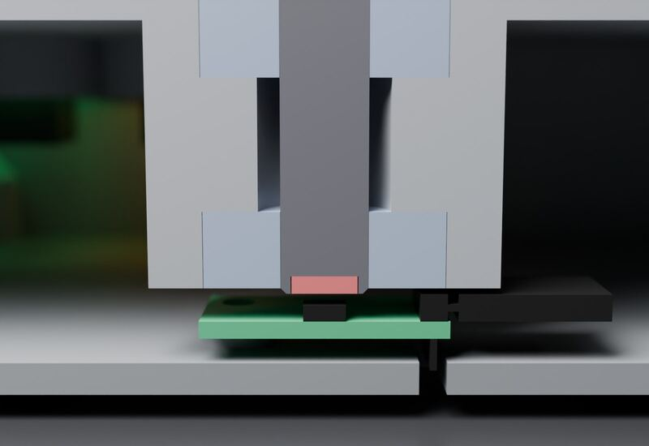
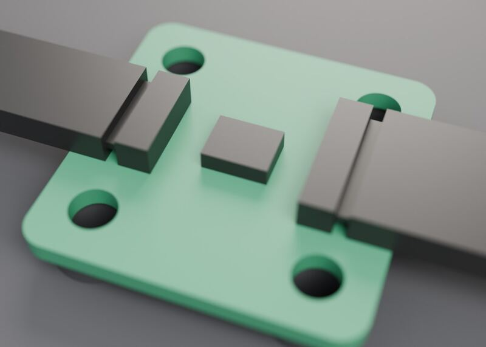
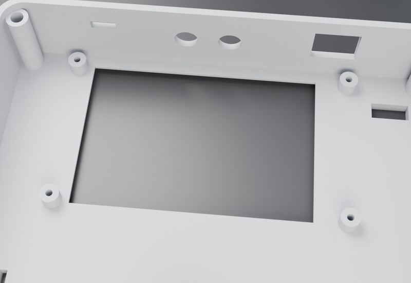
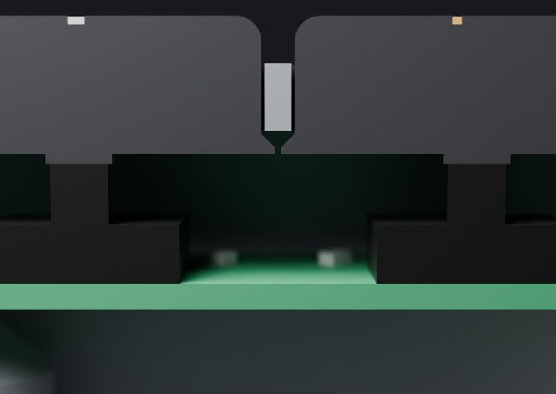
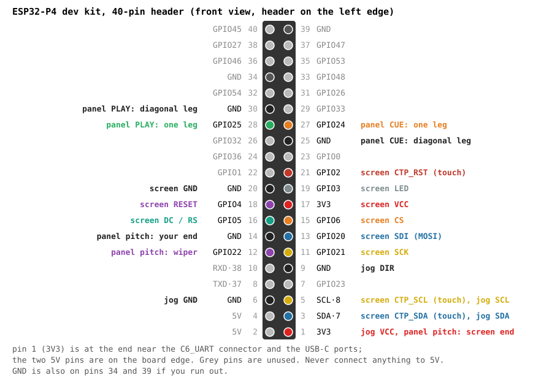
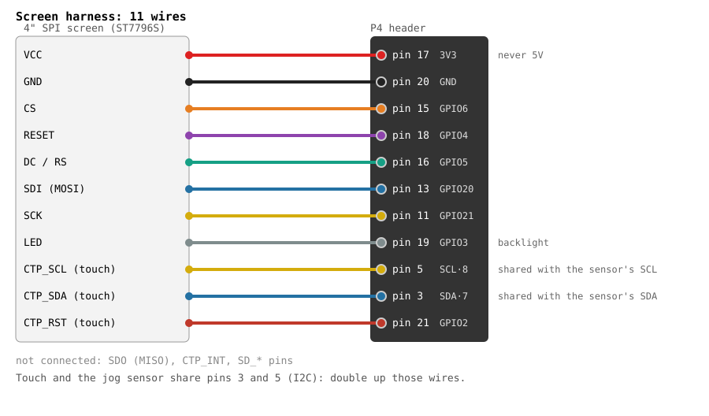
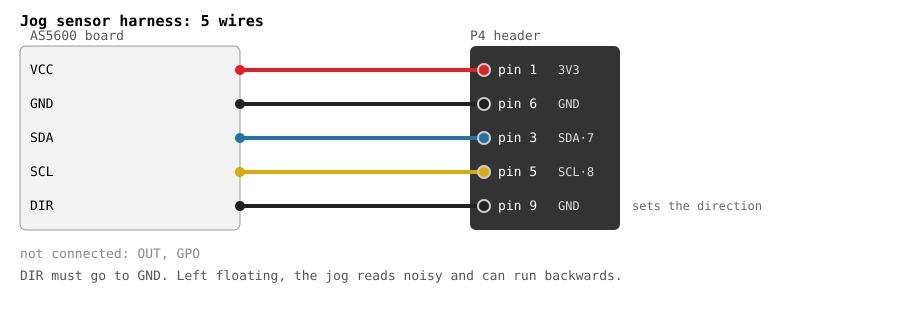
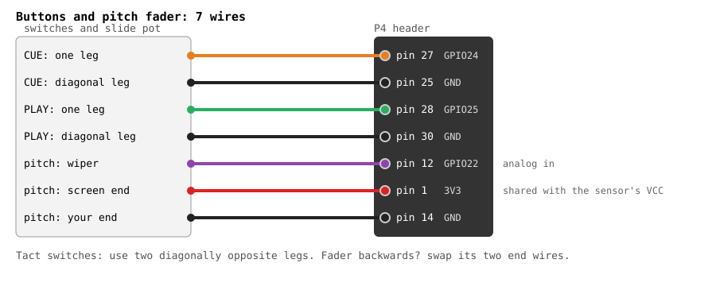

This is the whole build, start to finish: print the case, put the jog together, wire up the screen, the jog sensor, two buttons and the pitch fader, and flash the firmware. Everything is off-the-shelf parts and jumper wires. No circuit boards to order.
Plan on a weekend: most of it is waiting for the printer. If you get stuck, open an issue on GitHub and I'll help (and fix the guide).
Contents: 1. Parts · 2. Print · 3. Jog · 4. Mount everything · 5. Wire it · 6. Flash · 7. Test · 8. Close it up · Troubleshooting
Where a part has to be exact, the link goes to the exact part. Everything else is a search: any seller's version works. Roughly $60–80 all in, depending on where you buy.
Tools: a 3D printer (bed about 256 mm or bigger), a soldering iron (for the heat-set inserts and the fader's wires), small screwdrivers, a 3.2 mm drill bit, a computer with a USB-C cable. A multimeter helps.
Download the print files: freedj-print-files.zip
(on the latest release). There's a PRINT-LIST.txt inside.
Print the small test pieces first. They take minutes and tell you whether the big parts will fit your printer:
fit_gauge.stl: pins from 8.05 to 8.20 mm. Push them into a bearing. The platter's shaft is 8.1 mm, so the
8.1 pin should be a firm push fit. If your printer prints big or small, you'll know now.magnet_gauge.stl: check the magnet drops into the hole flush.Then the deck. PLA or PETG, 0.2 mm layers:
shell_flat.stl: upside down, flat on its top. No supports. This is the long one.base_flat.stl: flat. No supports.platter_flat.stl: upside down, shaft pointing up. Supports only in the recess on the top. Use 3–4 walls; the shaft is a press fit.button_plate.stl: flat, frames up. This holds the two switches under the buttons.play_cap_plain.stl, cue_cap_plain.stl: upside down, no supports.slider_knob.stl: upright, socket down.
Heat-set inserts. With the soldering iron, press the M3 inserts into the four corner bosses of the shell (the long ones), the four dev board standoffs on the base, and the four small bosses on the base under the jog (the short ones).
Sensor board. Screw the AS5600 board onto the four small bosses on the base, chip facing up. It sits right under the shaft: when the base goes on, the magnet ends up about 1 mm above the chip.

Dev board. Its mounting holes are made for M2.5; drill them out to 3.2 mm. Screw it onto the four standoffs on the base, with the Ethernet and USB-A ports facing the back wall and the USB-C ports facing the right side.
Screen. Put it face down into the shell behind the window and screw it onto the four bosses with the M3 × 5 thread-forming screws. Don't overtighten: they cut their own thread in the plastic.

Buttons. Push each tact switch's legs through the holes in the button plate, so the switch sits flat inside its little frame, and put a drop of glue under it. Solder a wire to two diagonally opposite legs underneath (see the wiring below); bend the other two legs flat. Drop the caps into the CUE and PLAY holes from inside the shell, then screw the plate on from below with the three M2.5 screws. It holds the caps in. Press each cap: you should feel the switch click.

Pitch fader. Solder three wires to one side of the fader (both ends and the middle pin, the wiper). Put it under the slot and screw it in from the top with the two M2 countersunk screws. Push the knob onto its lever.
Everything plugs into the dev board's 40-pin header. Pin 1 is the 3V3 pin at the end near the USB-C ports and the C6_UART connector. Odd pins are on the inside row, even pins on the board edge. Waveshare prints the GPIO numbers next to the pins, which is a good double check.
Never connect anything to the 5V pins (2 and 4). Everything here runs on 3.3 V.

Do it one harness at a time, and check each wire against the picture before you power up. The screen's touch and the jog sensor both use pins 3 and 5 (they're on the same I2C bus), so two wires go on each of those pins: use a Y-splice, or solder the two wires together into one connector.


Don't skip the DIR wire. If DIR isn't tied to ground, the jog reads noisy and can turn the wrong way.

Speaker (optional): plug it into the board's SPK connector, and keep it away from the jog sensor. A speaker's magnet next to the AS5600 makes the jog noisy.
pip install esptool/dev/ttyACM0 on Linux, /dev/cu.usbmodem… on a Mac, COM3 or similar on Windows.esptool --chip esp32p4 --port /dev/ttyACM0 -b 921600 write-flash 0x0 freedj-esp32p4.bin
If esptool can't connect, hold the board's BOOT button, tap RESET, let go of BOOT, and try again. Building it yourself instead? The README has the Docker build.
Open a serial terminal on the same port at 115200 baud (the Arduino serial monitor, PuTTY,
screen /dev/ttyACM0 115200, anything). Each key below prints a status line.
E. It should say the magnet is detected. Spin the platter and press e: the tick count changes.
Turning it clockwise should move the track forward.P. Hold CUE or PLAY while you press it, and it shows DOWN. Move the fader from one end to the
other and press P again: the pitch number should run from 0 to 1.The fader learns its own ends: after you power up, slide it once all the way up and down so it knows its full range.
Tuck the wires in so nothing touches the platter's shaft, put the base on, and screw it in with the four countersunk M3 screws. Stick the feet on. Done.
Syncing with other players: plug an Ethernet cable into the same network as your CDJs or XDJs. The deck joins Pro DJ Link as player 2, so make sure no other player is set to 2.
Built one? Send me a photo on Instagram, or post it in a GitHub issue. I'd love to see it.
Almost always a wiring mistake. Two common ones: screen VCC on 5V (or on both 3V3 and 5V), and wires on pins 8/10 (the serial port) instead of 3/5. Unplug everything except USB and try again, then add one harness at a time.
Check DIR goes to GND. Press E: if the magnet is "too weak", it's too far from the chip; check the magnet is flush with the end of
the shaft and the sensor board is screwed down flat. Keep the speaker away from the sensor.
The boot log (in the serial terminal) shows "FT5x06 init failed" if the touch chip doesn't answer. Check CTP_SDA is on pin 3, CTP_SCL on pin 5, and CTP_RST on pin 21. The log line "I2C devices:" lists what answered: 0x38 is the touch chip, 0x36 the jog sensor.
DIR is probably on 3V3 instead of GND.
Swap the fader's two end wires (pin 1 and pin 14).
Press P while holding it. If it never shows DOWN, you're probably on two legs that are always connected. Move one wire to the diagonal leg.
The shaft isn't all the way through both bearings, or the bearings aren't fully seated. If the shaft is loose, print the fit gauge and check which pin fits your bearings.
freedj is open source: firmware under the GPL, case files under CERN-OHL-S. The freedj name is mine, so if you share your own version, give it another name. Not affiliated with Pioneer DJ / AlphaTheta.